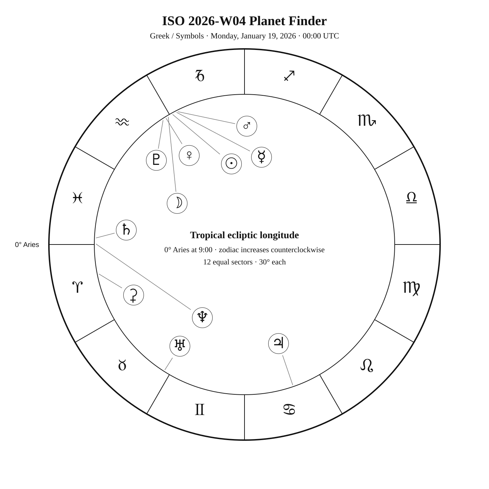
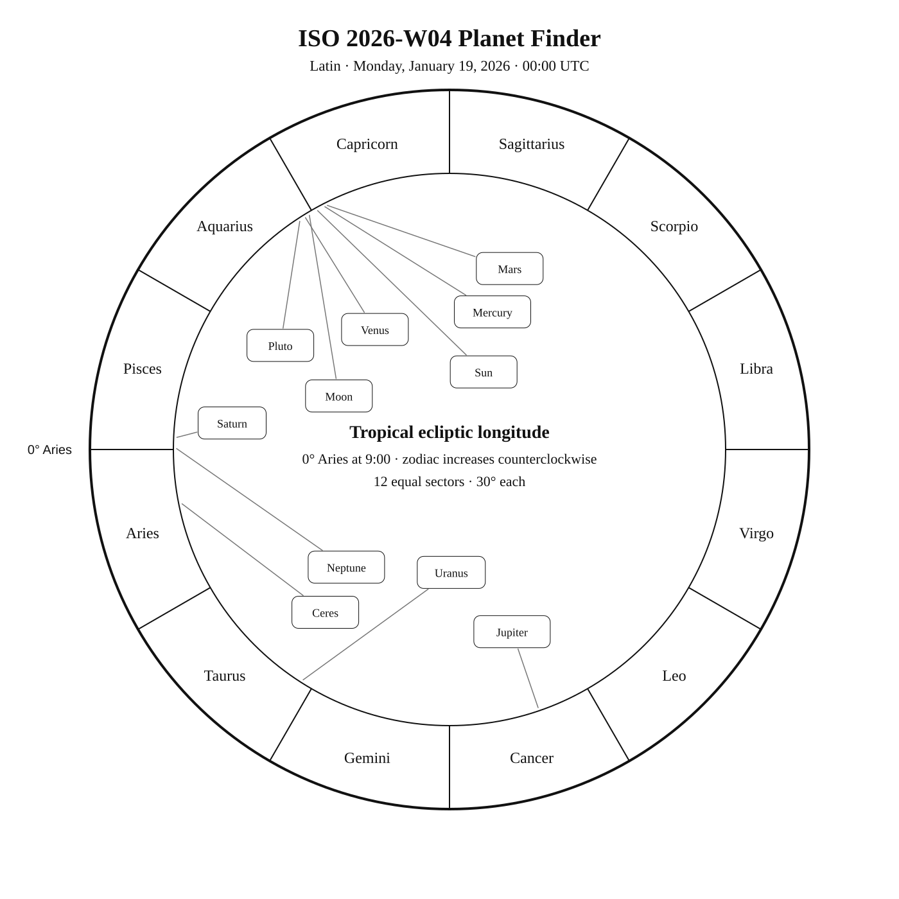
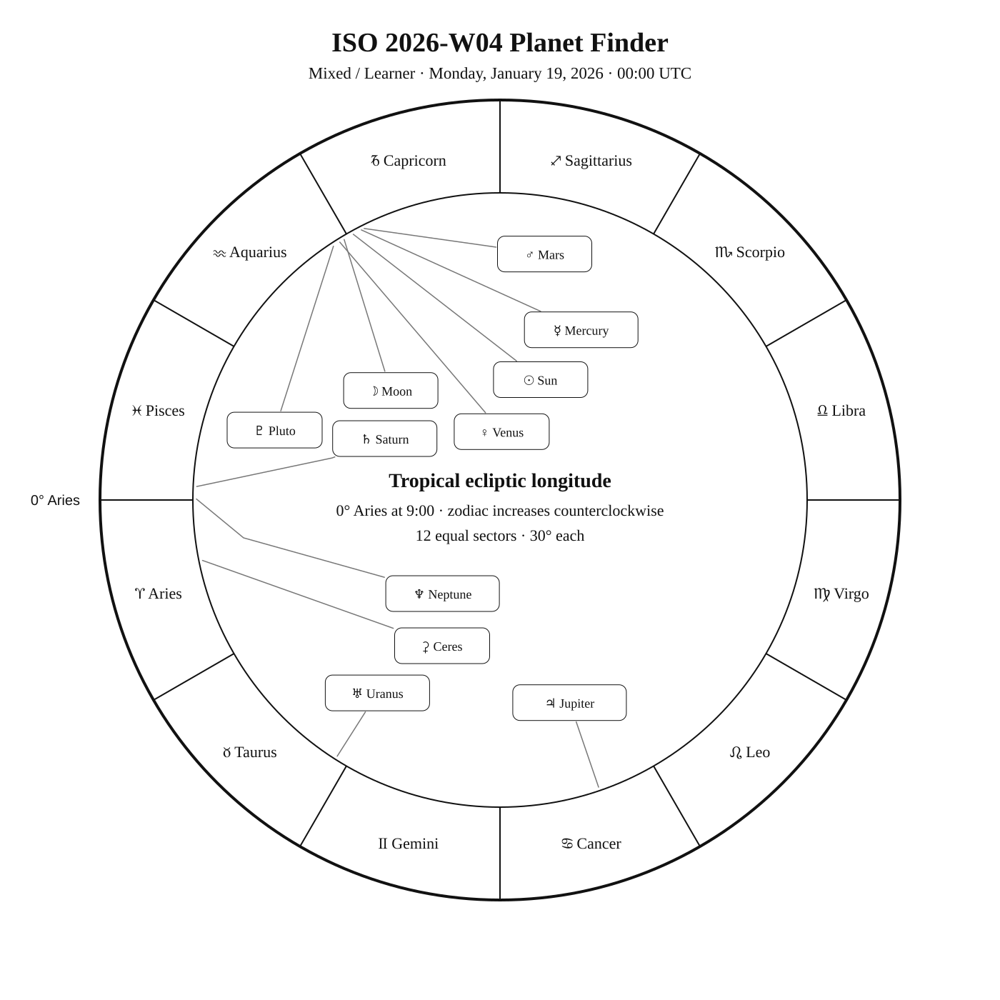

ISO 2026-W04
Week begins: Monday, January 19, 2026
Calendar
| Date | Zodiac day | Events |
|---|---|---|
| Mon, Jan 19, 2026 | ♑ 30 | β Men —  5 5.3 — Antarctic Winter 5 5.3 — Antarctic Winterβ Cam — 4 4.0 — Northern Winter |
| Tue, Jan 20, 2026 | ♒ 1 | ♒ Sun enters Aquarius — 01:44:56 UTC Finest NGC 25 / NGC 1788 · vdB 33 —  — Tropical Winter — Tropical WinterCursa (β Eri) —  3 2.8 — Tropical Winter 3 2.8 — Tropical Winter |
| Wed, Jan 21, 2026 | ♒ 2 | C73 / NGC 1851 — 7 7.3 — Southern WinterRigel (β Ori) / Rigel (β Orionis) — 0 0.2 — Tropical Winter |
| Thu, Jan 22, 2026 | ♒ 3 | C31 / IC 405 · Flaming Star Nebula — 6 6.0 — Northern WinterCapella (α Aur) — 0 0.1 — Northern Winter |
| Fri, Jan 23, 2026 | ♒ 4 | |
| Sat, Jan 24, 2026 | ♒ 5 | M79 — 8 7.7 — Southern WinterBellatrix (γ Ori) — 2 1.6 — Tropical WinterElnath (β Tau) — 2 1.7 — Northern Winter |
| Sun, Jan 25, 2026 | ♒ 6 | Nihal (β Lep) — 3 2.8 — Tropical WinterM38 — 7 7.4 — Northern WinterFinest NGC 24 / NGC 1931 — 14 14.0 — Northern Winter |
Weekly Solar-System Ephemeris
Snapshot: Week begins January 19, 2026, 00:00 UTC.
(-90° to +90°; defaults +45°, 21:00 LAT)
| Body | ☉︎ | ☽︎ | ☿︎ | ♀︎ | ♂︎ | ♃︎ | ♄︎ |
|---|---|---|---|---|---|---|---|
| Ecliptic | ♑︎ 28°54′ β −0°00′ | ♒︎ 0°53′ β −3°13′ | ♑︎ 27°11′ β −1°59′ | ♒︎ 1°51′ β −1°05′ | ♑︎ 26°35′ β −0°59′ | ♋︎ 18°57′ β +0°17′ | ♓︎ 27°27′ β −2°12′ |
| Observing |  | ☉︎ | ☉︎ | ☉︎ | ☉︎ | -2.7 | 1.0 |
| Rise | 07:22 | 07:49 | 07:30 | 07:39 | 07:22 | 15:37 | 10:00 |
| Set | 16:38 | 16:34 | 16:19 | 16:47 | 16:20 | 06:59 | 21:41 |
Extended targets:
| Body | ⚳︎ | ♅︎ | ♆︎ | ♇︎ |
|---|---|---|---|---|
| Ecliptic | ♈︎ 11°29′ β −7°46′ | ♉︎ 27°34′ β −0°12′ | ♓︎ 29°49′ β −1°19′ | ♒︎ 3°17′ β −3°47′ |
| Observing | 9.0 | 5.7 | 7.8 | ☉︎ |
| Rise | 10:58 | 12:11 | 10:00 | 08:00 |
| Set | 22:43 | 03:03 | 21:55 | 16:44 |
β = ecliptic latitude (+ north, − south).
Rise and set are Local Apparent Time for the selected latitude.
Naked-eye observing uses the Sun’s altitude at the selected Monday observer time: Daylight (Sun ≥ −0.833°), Civil twilight (−0.833° to −6°), Nautical twilight (−6° to −12°), Astronomical twilight (−12° to −18°), and Night (below −18°).
Solar Glare identifies a body too close to the Sun when the sky-state rule does not already supersede its naked-eye classification.
The Sun’s observing status uses this same five-state sky classification.
Planet Finder



Sky Notes
Kilroy: Sky Notes · generated 2026-10-09 02:25:14 UTC
ISO 2026-W04 runs from January 19 through January 25. Mercury and Mars are separated by about 0.6° in geocentric ecliptic longitude at the Monday 00:00 UTC snapshot. Venus and Pluto are separated by about 1.4° in geocentric ecliptic longitude at the Monday 00:00 UTC snapshot.


Naked eye: No principal lunar phase is listed this week. Check the Moon's position each night and favor darker hours for low-contrast targets. Use Cursa, Rigel, Capella, Bellatrix, Elnath, Nihal as the week’s fixed-sky framework.

Planets: Moon: In solar glare; magnitude -4.3; direct motion; 0.1% illuminated. Monday 00:00 UTC snapshot. Conjunction with Venus in ecliptic longitude Jan 19 02:02 UTC. Conjunction with Ceres in ecliptic longitude Jan 24 12:33 UTC. Conjunction with Saturn in ecliptic longitude Jan 23 09:32 UTC. Conjunction with Neptune in ecliptic longitude Jan 23 13:17 UTC. Conjunction with Pluto in ecliptic longitude Jan 19 04:35 UTC. Mercury: In solar glare; magnitude -1.2; direct motion; 99.7% illuminated. Monday 00:00 UTC snapshot. Solar conjunction in ecliptic longitude Jan 21 15:49 UTC. Conjunction with Pluto in ecliptic longitude Jan 22 17:14 UTC. Venus: In solar glare; magnitude -3.9; direct motion; 99.9% illuminated. Monday 00:00 UTC snapshot. Conjunction with Moon in ecliptic longitude Jan 19 02:02 UTC. Conjunction with Pluto in ecliptic longitude Jan 20 04:04 UTC. Mars: In solar glare; magnitude 1.1; direct motion; 100.0% illuminated. Monday 00:00 UTC snapshot. Ceres: Telescope; magnitude 9.0; direct motion; 97.3% illuminated. Monday 00:00 UTC snapshot. Conjunction with Moon in ecliptic longitude Jan 24 12:33 UTC. Jupiter: Naked eye; magnitude -2.7; retrograde motion; 100.0% illuminated. Monday 00:00 UTC snapshot. Saturn: Naked eye; magnitude 1.0; direct motion; 99.8% illuminated. Monday 00:00 UTC snapshot. Conjunction with Moon in ecliptic longitude Jan 23 09:32 UTC. Uranus: Binoculars; magnitude 5.7; retrograde motion; 100.0% illuminated. Monday 00:00 UTC snapshot. Neptune: Telescope; magnitude 7.8; direct motion; 100.0% illuminated. Monday 00:00 UTC snapshot. Conjunction with Moon in ecliptic longitude Jan 23 13:17 UTC. Pluto: In solar glare; magnitude 14.5; direct motion; 100.0% illuminated. Monday 00:00 UTC snapshot. Solar conjunction in ecliptic longitude Jan 23 10:28 UTC. Conjunction with Moon in ecliptic longitude Jan 19 04:35 UTC. Conjunction with Mercury in ecliptic longitude Jan 22 17:14 UTC. Conjunction with Venus in ecliptic longitude Jan 20 04:04 UTC.


Binoculars: Trace Mensa’s charted figure in the finder, then identify β Men at its charted position. Trace Camelopardalis’s charted figure in the finder, then identify β Cam at its charted position.
Small telescope: Concentrate on M79, M38. Increase magnification only after the target and surrounding pattern are secure.
Substantial telescope: No fixed-sky Calendar object is classified as requiring a substantial telescope this week.
Other objects listed this week: None
Mercury
Mercury: in solar glare at the Monday 00:00 UTC snapshot. Rises 07:30; sets 16:19 (45°N, local apparent solar time). Visual magnitude -1.2. The disk is 99.7% illuminated (nearly full). It is 2.6° from the Sun, on its west side. Motion is direct at 1.655° per day in ecliptic longitude at the snapshot. Position reference: Dabih, 9.8° away. Moon is 3.9° away at the snapshot. Venus is 4.7° away at the snapshot. Mars is 1.2° away at the snapshot. Solar conjunction in ecliptic longitude Jan 21 15:49 UTC. Conjunction with Pluto in ecliptic longitude Jan 22 17:14 UTC. Mercury: 9.8° from Dabih in the Pathfinder.
Venus
Venus: in solar glare at the Monday 00:00 UTC snapshot. Rises 07:39; sets 16:47 (45°N, local apparent solar time). Visual magnitude -3.9. The disk is 99.9% illuminated (nearly full). It is 3.1° from the Sun, on its east side. Motion is direct at 1.257° per day in ecliptic longitude at the snapshot. Position reference: Dabih, 6.2° away. Moon is 2.3° away at the snapshot. Mercury is 4.7° away at the snapshot. Pluto is 3.1° away at the snapshot. Conjunction with Moon in ecliptic longitude Jan 19 02:02 UTC. Conjunction with Pluto in ecliptic longitude Jan 20 04:04 UTC. Venus: 6.2° from Dabih in the Pathfinder.
Moon
Moon: in solar glare at the Monday 00:00 UTC snapshot. Rises 07:49; sets 16:34 (45°N, local apparent solar time). Visual magnitude -4.3. The disk is 0.1% illuminated (waxing crescent). It is 3.8° from the Sun, on its east side. Motion is direct at 12.531° per day in ecliptic longitude at the snapshot. Position reference: Dabih, 8.6° away. Mercury is 3.9° away at the snapshot. Venus is 2.3° away at the snapshot. Mars is 4.8° away at the snapshot. Pluto is 2.5° away at the snapshot. Conjunction with Venus in ecliptic longitude Jan 19 02:02 UTC. Conjunction with Ceres in ecliptic longitude Jan 24 12:33 UTC. Conjunction with Saturn in ecliptic longitude Jan 23 09:32 UTC. Conjunction with Neptune in ecliptic longitude Jan 23 13:17 UTC. Conjunction with Pluto in ecliptic longitude Jan 19 04:35 UTC. Moon: 8.6° from Dabih in the Pathfinder.
Mars
Mars: in solar glare at the Monday 00:00 UTC snapshot. Rises 07:22; sets 16:20 (45°N, local apparent solar time). Visual magnitude 1.1. The disk is 100.0% illuminated (nearly full). It is 2.5° from the Sun, on its west side. Motion is direct at 0.777° per day in ecliptic longitude at the snapshot. Position reference: Dabih, 9.6° away. Moon is 4.8° away at the snapshot. Mercury is 1.2° away at the snapshot. Mars: 9.6° from Dabih in the Pathfinder.
Jupiter
Jupiter: naked eye at the Monday 00:00 UTC snapshot. At 45°N and 21:00 local apparent solar time, it is 53.9° above the horizon. Rises 15:37; sets 06:59 (45°N, local apparent solar time). Visual magnitude -2.7. The disk is 100.0% illuminated (nearly full). It is 170.0° from the Sun, on its east side. Motion is retrograde at 0.131° per day in ecliptic longitude at the snapshot. Position reference: Pollux, 7.9° away. Jupiter: 7.9° from Pollux in the Pathfinder.
Saturn
Saturn: naked eye at the Monday 00:00 UTC snapshot. At 45°N and 21:00 local apparent solar time, it is 6.6° above the horizon. Rises 10:00; sets 21:41 (45°N, local apparent solar time). Visual magnitude 1.0. The disk is 99.8% illuminated (nearly full). It is 58.6° from the Sun, on its east side. Motion is direct at 0.084° per day in ecliptic longitude at the snapshot. Position reference: Fumalsamakah, 14.1° away. Neptune is 2.5° away at the snapshot. Conjunction with Moon in ecliptic longitude Jan 23 09:32 UTC. Saturn: 14.1° from Fumalsamakah in the Pathfinder.
Uranus
Uranus: binoculars at the Monday 00:00 UTC snapshot. At 45°N and 21:00 local apparent solar time, it is 59.1° above the horizon. Rises 12:11; sets 03:03 (45°N, local apparent solar time). Visual magnitude 5.7. The disk is 100.0% illuminated (nearly full). It is 118.7° from the Sun, on its east side. Motion is retrograde at 0.014° per day in ecliptic longitude at the snapshot. Position reference: Aldebaran, 13.6° away. Uranus: 13.6° from Aldebaran in the Pathfinder.
Neptune
Neptune: telescope at the Monday 00:00 UTC snapshot. At 45°N and 21:00 local apparent solar time, it is 9.1° above the horizon. Rises 10:00; sets 21:55 (45°N, local apparent solar time). Visual magnitude 7.8. The disk is 100.0% illuminated (nearly full). It is 60.9° from the Sun, on its east side. Motion is direct at 0.022° per day in ecliptic longitude at the snapshot. Position reference: Fumalsamakah, 15.0° away. Saturn is 2.5° away at the snapshot. Conjunction with Moon in ecliptic longitude Jan 23 13:17 UTC. Neptune: 15.0° from Fumalsamakah in the Pathfinder.
Ceres
Ceres: telescope at the Monday 00:00 UTC snapshot. At 45°N and 21:00 local apparent solar time, it is 17.0° above the horizon. Rises 10:58; sets 22:43 (45°N, local apparent solar time). Visual magnitude 9.0. The disk is 97.3% illuminated (gibbous). It is 72.7° from the Sun, on its east side. Motion is direct at 0.275° per day in ecliptic longitude at the snapshot. Position reference: Diphda, 15.4° away. Conjunction with Moon in ecliptic longitude Jan 24 12:33 UTC. Ceres: 15.4° from Diphda in the Pathfinder.
Pluto
Pluto: in solar glare at the Monday 00:00 UTC snapshot. Rises 08:00; sets 16:44 (45°N, local apparent solar time). Visual magnitude 14.5. The disk is 100.0% illuminated (nearly full). It is 5.8° from the Sun, on its east side. Motion is direct at 0.032° per day in ecliptic longitude at the snapshot. Position reference: Dabih, 8.4° away. Moon is 2.5° away at the snapshot. Venus is 3.1° away at the snapshot. Solar conjunction in ecliptic longitude Jan 23 10:28 UTC. Conjunction with Moon in ecliptic longitude Jan 19 04:35 UTC. Conjunction with Mercury in ecliptic longitude Jan 22 17:14 UTC. Conjunction with Venus in ecliptic longitude Jan 20 04:04 UTC. Pluto: 8.4° from Dabih in the Pathfinder.
Highlights
Mercury
In solar glare; magnitude -1.2; direct motion; 99.7% illuminated. Monday 00:00 UTC snapshot. Solar conjunction in ecliptic longitude Jan 21 15:49 UTC. Conjunction with Pluto in ecliptic longitude Jan 22 17:14 UTC. Mercury: 9.8° from Dabih in the Pathfinder.
Venus
In solar glare; magnitude -3.9; direct motion; 99.9% illuminated. Monday 00:00 UTC snapshot. Conjunction with Moon in ecliptic longitude Jan 19 02:02 UTC. Conjunction with Pluto in ecliptic longitude Jan 20 04:04 UTC. Venus: 6.2° from Dabih in the Pathfinder.
Moon
In solar glare; magnitude -4.3; direct motion; 0.1% illuminated. Monday 00:00 UTC snapshot. Conjunction with Venus in ecliptic longitude Jan 19 02:02 UTC. Conjunction with Ceres in ecliptic longitude Jan 24 12:33 UTC. Conjunction with Saturn in ecliptic longitude Jan 23 09:32 UTC. Conjunction with Neptune in ecliptic longitude Jan 23 13:17 UTC. Conjunction with Pluto in ecliptic longitude Jan 19 04:35 UTC. Moon: 8.6° from Dabih in the Pathfinder.
Mars
In solar glare; magnitude 1.1; direct motion; 100.0% illuminated. Monday 00:00 UTC snapshot. Mars: 9.6° from Dabih in the Pathfinder.
Jupiter
Naked eye; magnitude -2.7; retrograde motion; 100.0% illuminated. Monday 00:00 UTC snapshot. Jupiter: 7.9° from Pollux in the Pathfinder.
Saturn
Naked eye; magnitude 1.0; direct motion; 99.8% illuminated. Monday 00:00 UTC snapshot. Conjunction with Moon in ecliptic longitude Jan 23 09:32 UTC. Saturn: 14.1° from Fumalsamakah in the Pathfinder.
Uranus
Binoculars; magnitude 5.7; retrograde motion; 100.0% illuminated. Monday 00:00 UTC snapshot. Uranus: 13.6° from Aldebaran in the Pathfinder.
Neptune
Telescope; magnitude 7.8; direct motion; 100.0% illuminated. Monday 00:00 UTC snapshot. Conjunction with Moon in ecliptic longitude Jan 23 13:17 UTC. Neptune: 15.0° from Fumalsamakah in the Pathfinder.
Ceres
Telescope; magnitude 9.0; direct motion; 97.3% illuminated. Monday 00:00 UTC snapshot. Conjunction with Moon in ecliptic longitude Jan 24 12:33 UTC. Ceres: 15.4° from Diphda in the Pathfinder.
Pluto
In solar glare; magnitude 14.5; direct motion; 100.0% illuminated. Monday 00:00 UTC snapshot. Solar conjunction in ecliptic longitude Jan 23 10:28 UTC. Conjunction with Moon in ecliptic longitude Jan 19 04:35 UTC. Conjunction with Mercury in ecliptic longitude Jan 22 17:14 UTC. Conjunction with Venus in ecliptic longitude Jan 20 04:04 UTC. Pluto: 8.4° from Dabih in the Pathfinder.